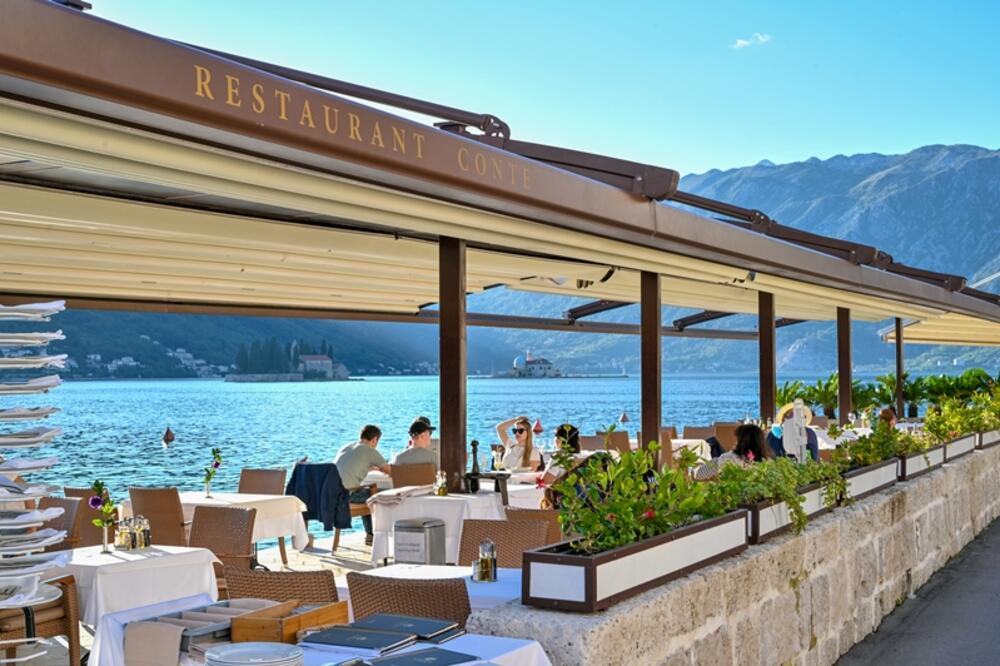

Profile information
Email:
########
Password:
########Resturants
Feeling hungry while exploring? Well this is just a right page for you! We request you different resturants in the south.

Unlock exclusive content by today!
Resturants
Ulcinj
- Restaurant Taverna
- Restaurant Stari Grad
- Restaurant Pino
Bar
- Restaurant Mlin
- Restaurant Maestral
- Restaurant Sardela
Budva
- Restaurant Jadran
- Restaurant Stari Grad
- Restaurant Teatar
Tivat
- Tavern Bura
- Restaurant Tiha Noć
- Tavern Maris
Kotor
- Restaurant Vardar
- Tavern Scala Santa
- Restaurant Cattaro
Perast
- Restaurant Conte
- Restaurant Miris Dunja
- Villa Boka restaurant
Herceg Novi
- Restaurant Kafana Kolo
- Restaurant Portofino
- Resturants Piano
Specific for its offer of authentic Mediterranean cuisine, this restaurant offers fresh seafood and dishes prepared according to traditional recipes. The ambience is relaxing, with a view of the sea makes it an ideal place to enjoy an evening with the sounds of the waves.
Located in the old part of Ulcinj, this restaurant offers traditional Montenegrin cuisine, including homemade meat specialties and fresh vegetables from local gardens. The ambience is authentic, with stone walls and wooden details, which add to its charm.
Known for its pizza and pasta offerings, Pino is popular with families and young people. This one the restaurant stands out for its relaxed atmosphere and varied menu, which also includes vegetarian options options, which makes it attractive for all visitors.
This restaurant is specific for its unique ambience, located in a restored mill on the river. "Mlin" offers a combination of Mediterranean and international cuisine, and grilled dishes are especially popular. Guests can enjoy the scents of nature and the sounds of water while eating on the riverside terrace.
This restaurant prides itself on its meat specialities, including rack of lamb and toasted lamb chicken. "Maestral" stands out for its attention to traditional food preparation techniques and using local ingredients. Guests can enjoy an authentic experience in a warm and friendly environment ambience.
Specific for its offer of fresh seafood, "Sardela" stands out for its authentic fish dishes prepared according to traditional recipes. The restaurant is known for its ambiance by the sea, where guests can enjoy a meal with a beautiful view of the coast.
Restaurant Jadran – This restaurant is one of the most famous in Budva and offers a wide selection of traditional dishes. It specializes in seafood and local cuisine, and is also known for its seaside atmosphere.
Stari Grad Restaurant – Located in the old part of Budva, this restaurant offers authentic Montenegrin dishes with an emphasis on fresh local ingredients. We offer a variety of meat dishes, fish specialties and homemade cakes.
Teatar Restaurant – This restaurant combines traditional Montenegrin cuisine with a modern approach. The menu includes a variety of meat and fish dishes, as well as vegetarian options, all in a pleasant setting.
Tavern Bura: This restaurant is known for its authentic Montenegrin cuisine. It offers a variety of meat and fish dishes, as well as local specialties such as prosciutto, cheese and grilled fish.
Tiha Noć Restaurant: Located near the coast, this restaurant offers a variety of dishes from Montenegrin cuisine, including fish specialties, grilled dishes and traditional soups.
Tavern Maris: This tavern focuses on fresh seafood and traditional dishes. They are known for their fish stews, pasties and meat specialties.
Restaurant Vardar: This restaurant is known for its wide selection of traditional dishes, including local meat specialties, fish and seafood. It has a pleasant atmosphere and is located near the main square.
Tavern Scala Santa: Located in the old town, this tavern offers authentic Montenegrin dishes with a focus on fresh seafood and local specialties, such as sarma and homemade bread.
Cattaro Restaurant: This restaurant offers a variety of dishes from Montenegrin cuisine, including fresh fish, barbecue and various salads. It has a nice view of the sea and a pleasant atmosphere.
Restaurant Conte – This restaurant is known for its tradition and authentic Montenegrin dishes. It has a wonderful view of the sea and offers a variety of fish, meat and seafood dishes.
Restaurant Miris Dunja - The restaurant offers local cuisine with a focus on fresh local ingredients. Their offer includes traditional dishes such as gnocchi, various types of meat and fish specialties.
Vile Boka Restaurant - Located by the sea, this restaurant specializes in seafood and traditional dishes from Montenegro. It has a pleasant atmosphere and an emphasis on local specialties.
Specific for its offer of traditional Montenegrin cuisine, "Kafana Kolo" offers authentic dishes such as čevapcic, sarma and seafood specialties. The ambience is pleasant and rustic, and the restaurant is known for friendly service and homely atmosphere.
Ovaj restoran je poznat po svojoj mediteranskoj kuhinji i specijalitetima od ribe i morskih plodova. Ono što ga čini posebnim je predivan pogled na more i uvalu, što gosti često ističu kao jedan od glavnih razloga za posetu. Restoran takođe nudi odličan izbor vina koja se savršeno uklapaju uz obroke.
Specifičan po svom modernom dizajnu i kreativnom jelovniku, „Piano“ nudi inovativna jela koja kombinuju lokalne sastojke s međunarodnim kulinarskim tehnikama. Restoran je poznat po svojim vegetarijanskim i veganskim opcijama, što ga čini privlačnim za širu publiku. U večernjim satima često se organizuju tematske večeri s muzikom uživo.
Icons provided by Icons8